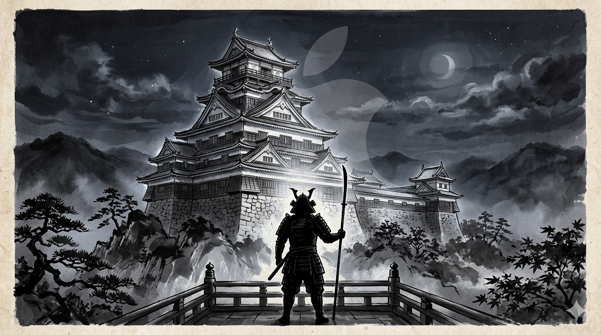
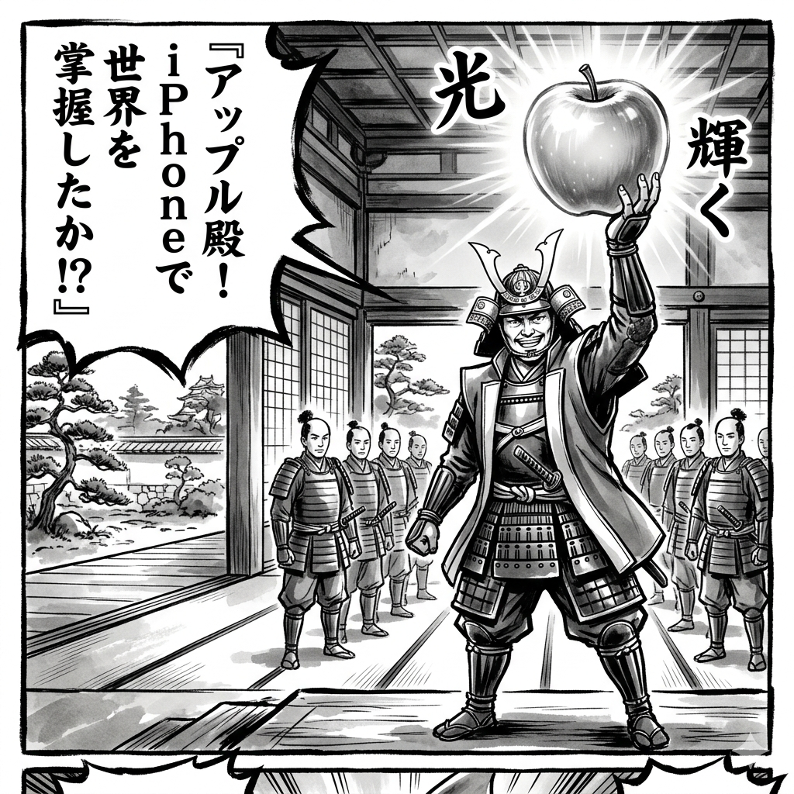
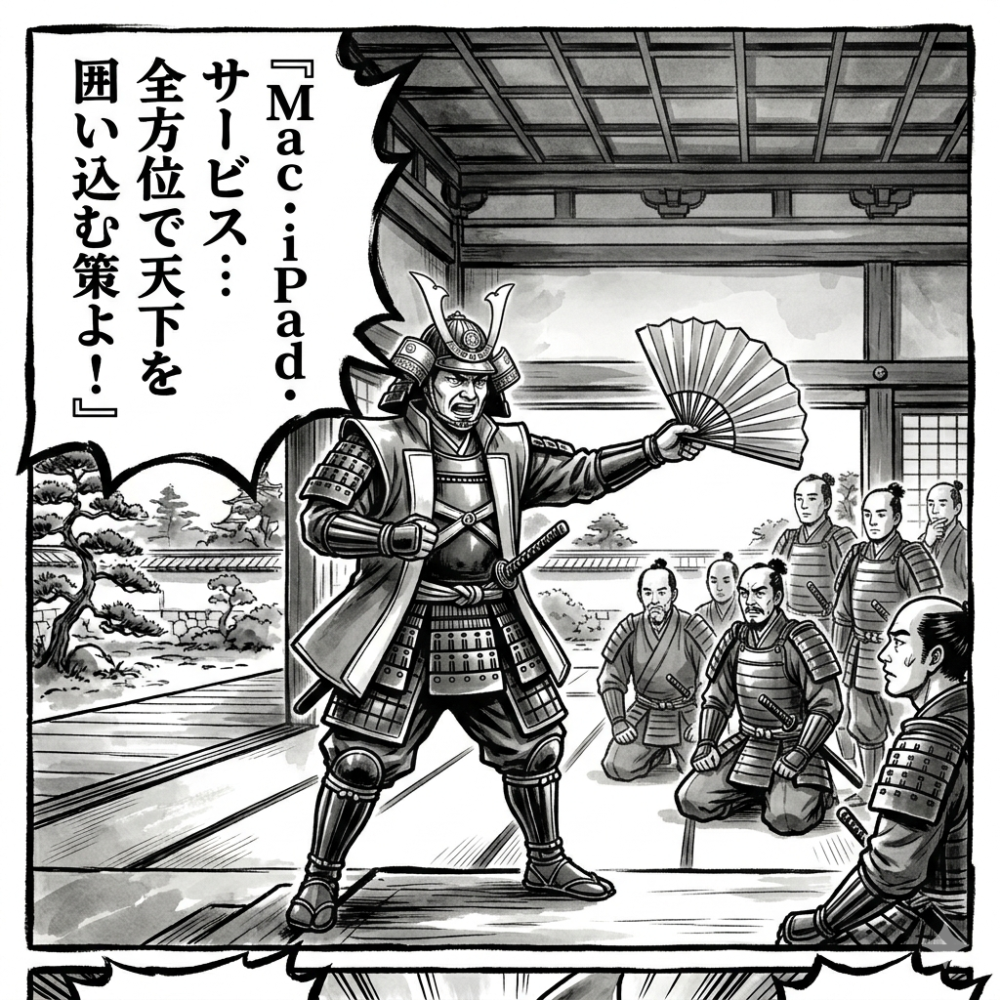
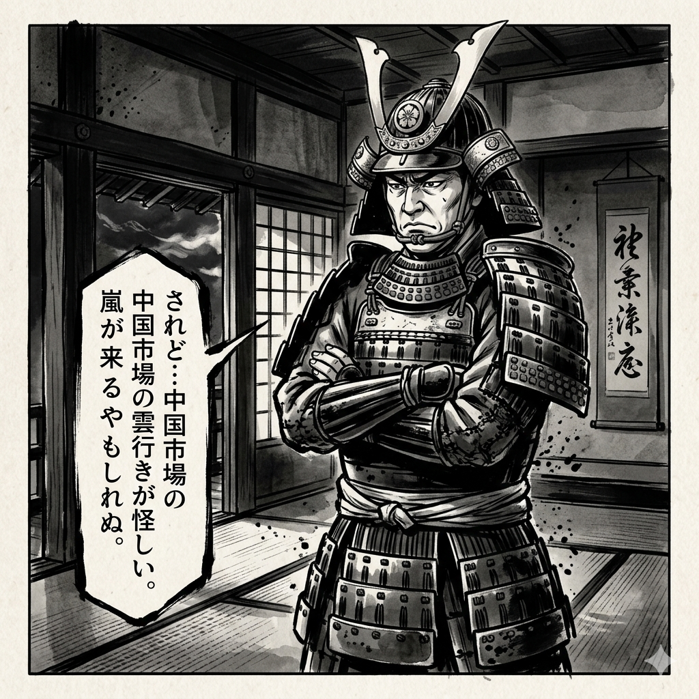
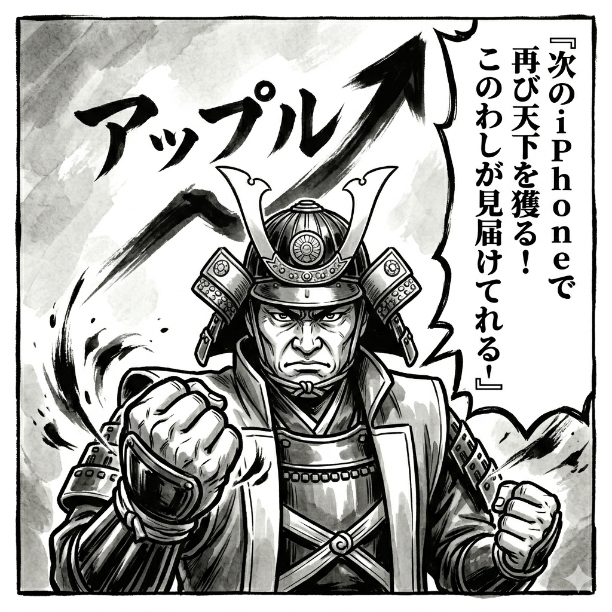

安土城
|
Apple Inc. / AAPL
FCF1,120億ドルの安土城 エコシステムという見えない城壁
Apple 2024年9月期決算（FY2024）｜ 城主：織田信長
FIREスコア 88点 ｜ 激走候補（SS）

最新決算概要（2024年9月期 FY2024）
| 項目 | 数値 |
|---|---|
| 売上高 | 約3,911億ドル（前年比+2%） |
| 営業利益率 | 約31% |
| FCF | 約1,120億ドル（世界最大級） |
| 現金・投資 | 約1,500億ドル保有 |
| CEO | Tim Cook（ティム・クック） |
決算書の一次情報はここで確認できます
▶ Apple IR公式サイト漫画でわかるApple

2024年9月——。FCF1,120億ドル。AppleはiPhone一台から始めた城を、18億台のエコシステムへと育てていた。信長は静かにその数字を眺めた。「…エコシステムで天下を獲った。城下の民は逃げられぬ。」

「iCloud・App Store・Apple Pay…三方に城壁を張ったわ！」見えない城壁が人々を内側に閉じ込めていた。信長が叫んだ瞬間、家臣たちは声も出なかった。

しかし欧州でDMA（デジタル市場法）が施行された。App Storeという関所の独占が揺れ始めた時——「…されど！規制という明智が、動き出した！！」信長の目に鬼火が宿った。

信長は遠くを見据えたまま呟いた。「…Apple Intelligenceで、次の城を建てる。」炎は消えていなかった。
信長 × Tim Cook の問答
信長
「クック殿！よく来た。まず聞く——iPhoneの成長が鈍化している。天下の刀が錆びているのではないか？」
Cook
「信長公、鋭いご指摘です。確かにiPhone単体の成長は落ち着いてきました。しかし我々はもはやデバイス会社ではありません——エコシステム会社です」
信長
「エコシステム……つまり、城下町じゃな。iPhoneという城を建てて、App Storeという市場を作り、城下の民が毎月銭を払い続ける仕組みか」
Cook
「まさにその通りです。サービス部門だけで年間9,600億ドルを超えました。前年比+13%で成長し続けています」
信長
「Apple Siliconという独自の刃を鍛え、MacもiPadも全て自前の鉄砲に切り替えた。これは長篠の戦いで馬を鉄砲に変えた我が戦略と同じじゃ！」
Cook
「我々は垂直統合という言葉を使いますが、信長公の言葉の方が本質を突いています。Apple Intelligence——AIの統合も、まず自社チップで動かすことが起点です」
信長
「FCF1,120億ドル……この弾薬で何を狙う？」
Cook
「インドです。14億人の市場でiPhoneの製造と販売を本格化します。中国依存を分散させながら、次の10億人のiPhoneユーザーを獲得する」
信長
「よし！この城を安土城と認める！エコシステムという見えない城壁、崩すのは容易ではないぞ！」

城代・財務アナリストの解説
PL（兵糧）分析
売上高3,911億ドルは、日本円換算で約58兆円（1ドル＝150円換算）。iPhone依存（売上の51%）が課題だが、サービス部門の急成長が構造を変えつつある。営業利益率31%は、ハードウェア会社としては異次元の水準。サービス部門の利益率は推定70%超。「App Storeという関所」が安定収益を生む。
BS（石垣）分析
現金・短期投資は約1,500億ドル。ネットキャッシュは+500億ドルと潤沢。大規模な自社株買い（年1,100億ドル超）により帳簿上の自己資本はほぼゼロに近い。これは財務の脆弱性ではなく、株主価値最大化の戦略的選択。
CF（堀の水）分析
FCF約1,120億ドルは、Appleの財務上の最大の武器。この資金で年1,100億ドル以上の自社株買いを実施し、EPSを毎年押し上げる。配当+自社株買いの総還元額は年間1,400億ドルを超え、歴史上類を見ない株主還元規模を継続している。
FIREスコア内訳
| 軸 | スコア | コメント |
|---|---|---|
| BS強度 | 85点 | 現金1,500億ドル・株主還元で自己資本は低いが実質堅固 |
| CF安定性 | 93点 | FCF1,120億ドル・エコシステムが生む経常収益 |
| PL収益性 | 88点 | 営利率31%・サービス部門+13%成長で収益多様化 |
| 成長性 | 87点 | Apple Intelligence・Vision Pro・インド市場開拓 |
| 総合 | 88点 | 激走候補（SS） |
城代の総評
Appleの強みは製品ではなく、エコシステムという見えない城壁にある。iPhoneを一度持てば、App Store・iCloud・AirPodsでユーザーを城内に閉じ込める仕組みが完成している。唯一の懸念は規制当局による「App Store解体命令」。EUのデジタル市場法（DMA）によりエコシステムの壁が低くなれば、収益モデル変革を迫られる可能性がある。
⚠️ 免責事項：本記事は投資を推奨するものではありません。数値は公開情報をもとにした概算・解説です。投資判断はご自身の判断と責任のもとで行ってください。